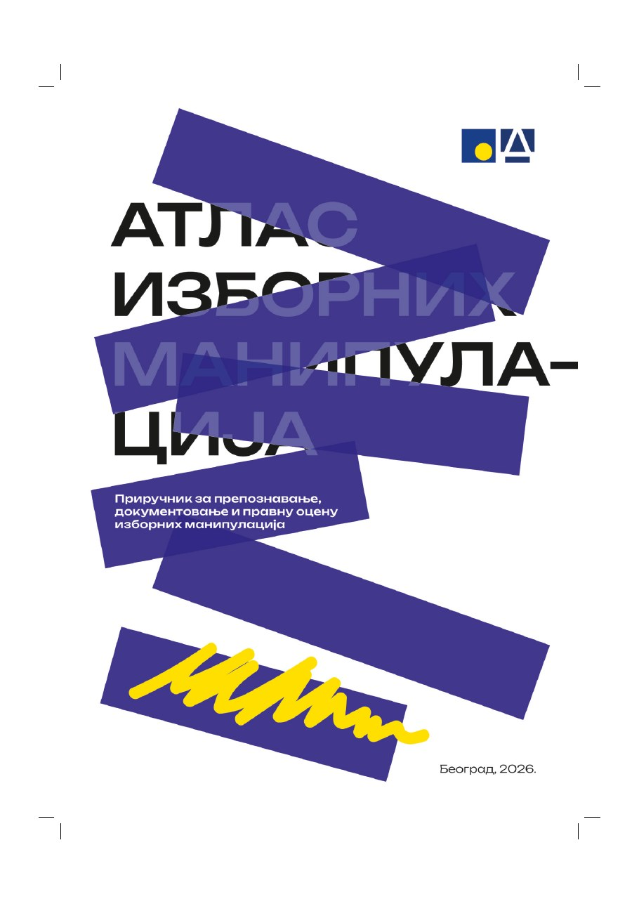

О Атласу
Циљ, намена, начин настанка и корисници Атласа изборних манипулација.
Дигитално издање
Систематизован приказ изборних манипулација, начина њиховог препознавања и документовања, правног оквира и конкретних студија случаја.
Претрага обухвата комплетан садржај дигиталног издања.

Књига
Комплетно издање приручника за препознавање, документовање и правну оцену изборних манипулација доступно је за читање и преузимање у PDF формату.
Преузмите књигу у PDF форматуГлавна структура
Изборни услови, бирачки списак, кандидовање и институционална припрема.
KAMЈавни ресурси, медији, притисци, функционерска кампања и дезинформације.
BMГласање, рад бирачког одбора и неправилности током изборног дана.
BRБројање гласова, записници и поступање са изборним материјалом.
POSTУвид, приговори, жалбе, рокови и делотворност правне заштите.
CASEДокументовани примери изборних неправилности и институционалних реакција.
Садржај публикације
Циљ, намена, начин настанка и корисници Атласа изборних манипулација.
Уставне основе, изборни закони, правна средства, одговорност и надлежне институције.
Јединствен модел обраде, извори, докази, правни оквир и процена утицаја.
Значење 30 основних појмова који се користе у анализи изборних неправилности и манипулација.
Захтеви, приговори, службене белешке и други документи за практичну примену.
Десет документованих примера изборних манипулација, институционалних реакција и поука за будуће изборне процесе.
Повезивање неправилности у обрасце, анализа кумулативног ефекта и доказивање системске манипулације.
Правила за чињенично документовање, чување доказа и законито поступање контролора и посматрача.
Практична контролна листа за припрему, гласање, доказе, записник, приговоре и примопредају материјала.
Завршна разматрања о улози контролора и посматрача, употребљивим доказима и очувању изборног интегритета.
Образовни део
Интерактивни приручник намењен члановима бирачких одбора и посматрачима. Курс допуњује Атлас практичним објашњењима и води корисника кроз најважније ситуације које може срести у изборном процесу.
Покрени курс →Атлас изборних манипулација није само опис неправилности, већ практичан водич за њихово препознавање, документовање и правно оспоравање.